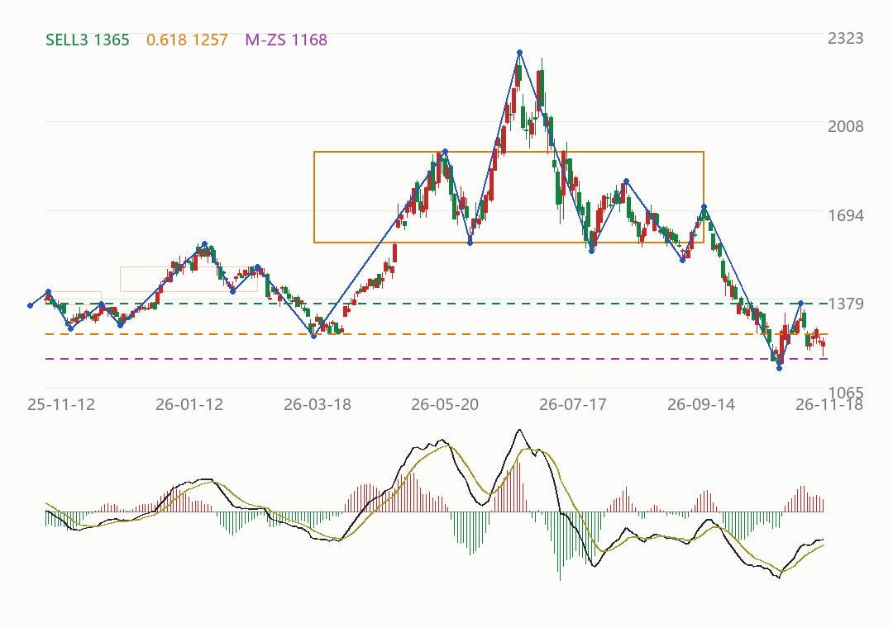

今 日 信 号
下跌在减速，等底分型
日线在 3928~4197 中枢下方；离开后反弹第一次只到 3701.59（三卖）。本轮下跌 3574→3501：价新低、DIF 抬高（-57.1→-52.3）、绿柱面积缩小；这一笔还没走完。30 分钟最后中枢 3566~3597。
结构状态
日线位置中枢下方（3928~4197）
三买 / 三卖三卖 3701.59（第 1 次回试）
同向笔力度（背驰近似）价新低 + DIF 抬高 + 面积缩（≈底背驰）
30 分钟最后中枢 3566~3597
月线（大级别）月线中枢上沿 3419（在上方）
风控提示（原文规则）
第16课 入场后一旦出现盘整走势，坚决退出（盘整不参与，且盘整后有一半概率继续下跌）。
第20课 三类买卖点必须是第一次回试；三买后若走不出第二个同级别中枢（不成趋势），就在盘整高点出掉。
第20课 中枢延伸期间只做震荡，不做方向判断（价格在中枢内来回＝没有方向）。
当前触发
【第16课】力度已衰减但笔未走完（缺底分型）。此时按一买入场＝在'跌势未尽'处接刀，原文明确属于要躲的两大风险之一，应当等确认。
关键位
| 压力 | 点位 |
|---|
| MA20 | 3636.54 |
| 三卖 / 第一次反弹高点 | 3701.59 |
| 日线中枢下沿 | 3927.85 |
| 支撑 | 点位 |
|---|
| 0.618 回撤 | 3506.03 |
| 月线中枢上沿 | 3418.95 |
| 0.786 回撤 | 3301.38 |
出现什么才动手
| 如果出现 | 对应动作 |
|---|
| 30 分钟收盘站回 3565.59（最后中枢下沿）并写出底分型 | 短线止跌，可小仓做差，目标先看 MA20 3636.54 |
| 再跌破 3500.83 时，绿柱面积仍小于 -347 | 力度双缩且笔走完 → 一买近似 |
| 收盘跌破 3418.95 且一周收不回 | 大级别转弱，空间下移到 0.786（3301.38） |
| 反弹站上 3927.85 | 回到中枢内，下跌结构才算被破坏 |
日线结构图 蓝线=笔 橙框=中枢

信号灯走查回测 以当日收盘计
| 信号状态 | 样本 | 5日 | 10日 | 20日 | 5日胜率 | 20日回撤 |
|---|
| 红灯（空仓等） | 611 | +0.29% | +0.40% | +0.52% | 56% | -2.48% |
| 黄灯（观察） | 171 | -0.03% | -0.06% | -0.66% | 49% | -3.32% |
| 绿灯（持有） | 125 | -0.09% | -0.05% | -0.15% | 49% | -3.19% |
| 信号切换日 | 样本 | 5日 | 10日 | 20日 | 5日胜率 | 20日回撤 |
|---|
| 红灯（空仓等） | 26 | +0.48% | +0.30% | +0.68% | 62% | -2.06% |
| 黄灯（观察） | 48 | -0.01% | +0.12% | -0.58% | 50% | -2.81% |
| 绿灯（持有） | 40 | -0.07% | -0.07% | -1.51% | 48% | -3.41% |
样本期 2015-08-10 ~ 2026-10-23，中位数收益；“信号切换日”指灯由别的颜色切到该颜色的那一天。
⚠ 这张表是对本站自己的检验：信号灯本身没有稳定的边际（有的指数上红灯之后反而是涨的）。
所以请把它当“状态描述”，不要当择时指标；真正有信息量的是三卖/中枢下沿这些结构位，以及上面的风控规则。
最近 8 次收盘结论
| 日期 | 收盘 | 结论 |
|---|
| 2026-11-20 | 3533.79 | 下跌在减速，等底分型 |
口径 vs 原文（点开核对）
| 本站口径 | 原文（《教你炒股票》） |
|---|
| 用笔做中枢的最小零件 | 第18/20课：中枢由"三个连续次级别走势类型"重叠确定，区间 [max(a2,b2,c2), min(a1,b1,c1)]，简化为 [max(a2,c2), min(a1,c1)]。笔≠走势类型，简化了一级。 |
| 延伸：笔端点回到区间；最多 9 笔截断 | 第20课中心定理一：中枢延伸 ⟺ 任意 [dn,gn] 与 [ZD,ZG] 有重叠。本站用笔端点近似"波动区间"；"9 笔截断"是流行口径，原文没有这条定理。 |
| 三买/三卖只认第一次回试 | 第20课："并不是任何回调回抽都是第三类买卖点，必须是第一次。" —— 一致。 |
| 叫"同向笔力度（背驰近似）" | 第16课："没有趋势，没有背驰；背驰是前后趋势间的比较。" 本站比的是同向笔，不是两个趋势，所以只能叫近似。 |
| 风控块 | 第16课：入场后一旦出现盘整，坚决退出；第20课：三买后不成趋势，在盘整高点出掉。 |
今 日 信 号
月线破位，宁可空仓
日线在 3227~3472 中枢下方；离开后反弹第一次只到 2620.25（三卖）。本轮下跌 2376→2212：价新低、DIF 抬高（-204.5→-155.7）、绿柱面积缩小；这一笔还没走完。30 分钟最后中枢 2264~2330。
结构状态
日线位置中枢下方（3227~3472）
三买 / 三卖三卖 2620.25（第 1 次回试）
同向笔力度（背驰近似）价新低 + DIF 抬高 + 面积缩（≈底背驰）
30 分钟最后中枢 2264~2330
月线（大级别）月线中枢上沿 2661（已跌破）
风控提示（原文规则）
第16课 入场后一旦出现盘整走势，坚决退出（盘整不参与，且盘整后有一半概率继续下跌）。
第20课 三类买卖点必须是第一次回试；三买后若走不出第二个同级别中枢（不成趋势），就在盘整高点出掉。
第20课 中枢延伸期间只做震荡，不做方向判断（价格在中枢内来回＝没有方向）。
当前触发
【第16课】力度已衰减但笔未走完（缺底分型）。此时按一买入场＝在'跌势未尽'处接刀，原文明确属于要躲的两大风险之一，应当等确认。
关键位
| 压力 | 点位 |
|---|
| MA20 | 2453.47 |
| 三卖 / 第一次反弹高点 | 2620.25 |
| 日线中枢下沿 | 3227.18 |
| 支撑 | 点位 |
|---|
| 月线中枢上沿 | 2661.28 |
| 0.618 回撤 | 2589.80 |
| 0.786 回撤 | 2103.04 |
出现什么才动手
| 如果出现 | 对应动作 |
|---|
| 30 分钟收盘站回 2263.74（最后中枢下沿）并写出底分型 | 短线止跌，可小仓做差，目标先看 MA20 2453.47 |
| 再跌破 2212.13 时，绿柱面积仍小于 -1107 | 力度双缩且笔走完 → 一买近似 |
| 收盘跌破 2661.28 且一周收不回 | 大级别转弱，空间下移到 0.786（2103.04） |
| 反弹站上 3227.18 | 回到中枢内，下跌结构才算被破坏 |
日线结构图 蓝线=笔 橙框=中枢

信号灯走查回测 以当日收盘计
| 信号状态 | 样本 | 5日 | 10日 | 20日 | 5日胜率 | 20日回撤 |
|---|
| 红灯（空仓等） | 510 | +0.15% | -0.11% | -0.11% | 52% | -4.55% |
| 黄灯（观察） | 329 | -0.16% | +0.41% | -0.41% | 47% | -5.06% |
| 绿灯（持有） | 68 | +0.63% | +0.24% | -2.19% | 57% | -5.04% |
| 信号切换日 | 样本 | 5日 | 10日 | 20日 | 5日胜率 | 20日回撤 |
|---|
| 红灯（空仓等） | 28 | +1.40% | +0.11% | +0.19% | 64% | -3.45% |
| 黄灯（观察） | 41 | -0.43% | -0.25% | -0.76% | 44% | -5.06% |
| 绿灯（持有） | 17 | +1.19% | +1.63% | +2.04% | 71% | -3.55% |
样本期 2015-08-10 ~ 2026-10-23，中位数收益；“信号切换日”指灯由别的颜色切到该颜色的那一天。
⚠ 这张表是对本站自己的检验：信号灯本身没有稳定的边际（有的指数上红灯之后反而是涨的）。
所以请把它当“状态描述”，不要当择时指标；真正有信息量的是三卖/中枢下沿这些结构位，以及上面的风控规则。
最近 8 次收盘结论
| 日期 | 收盘 | 结论 |
|---|
| 2026-11-20 | 2212.13 | 月线破位，宁可空仓 |
口径 vs 原文（点开核对）
| 本站口径 | 原文（《教你炒股票》） |
|---|
| 用笔做中枢的最小零件 | 第18/20课：中枢由"三个连续次级别走势类型"重叠确定，区间 [max(a2,b2,c2), min(a1,b1,c1)]，简化为 [max(a2,c2), min(a1,c1)]。笔≠走势类型，简化了一级。 |
| 延伸：笔端点回到区间；最多 9 笔截断 | 第20课中心定理一：中枢延伸 ⟺ 任意 [dn,gn] 与 [ZD,ZG] 有重叠。本站用笔端点近似"波动区间"；"9 笔截断"是流行口径，原文没有这条定理。 |
| 三买/三卖只认第一次回试 | 第20课："并不是任何回调回抽都是第三类买卖点，必须是第一次。" —— 一致。 |
| 叫"同向笔力度（背驰近似）" | 第16课："没有趋势，没有背驰；背驰是前后趋势间的比较。" 本站比的是同向笔，不是两个趋势，所以只能叫近似。 |
| 风控块 | 第16课：入场后一旦出现盘整，坚决退出；第20课：三买后不成趋势，在盘整高点出掉。 |
今 日 信 号
下跌未减速，空仓等
日线在 1578~1902 中枢下方；离开后反弹第一次只到 1364.88（三卖）。本轮下跌 1132→1198：还没跌破前低 1132.33；这一笔还没走完。30 分钟最后中枢 1257~1277。
结构状态
日线位置中枢下方（1578~1902）
三买 / 三卖三卖 1364.88（第 1 次回试）
同向笔力度（背驰近似）未跌破前低
30 分钟最后中枢 1257~1277
月线（大级别）月线中枢上沿 1168（在上方）
风控提示（原文规则）
第16课 入场后一旦出现盘整走势，坚决退出（盘整不参与，且盘整后有一半概率继续下跌）。
第20课 三类买卖点必须是第一次回试；三买后若走不出第二个同级别中枢（不成趋势），就在盘整高点出掉。
第20课 中枢延伸期间只做震荡，不做方向判断（价格在中枢内来回＝没有方向）。
当前触发
【无】当前没有触发原文的退出条件；信号是'等待/空仓'，不构成买入依据。
关键位
| 压力 | 点位 |
|---|
| MA20 | 1249.49 |
| 三卖 / 第一次反弹高点 | 1364.88 |
| 日线中枢下沿 | 1578.18 |
| 支撑 | 点位 |
|---|
| 0.618 回撤 | 1257.48 |
| 月线中枢上沿 | 1168.09 |
| 0.786 回撤 | 986.25 |
出现什么才动手
| 如果出现 | 对应动作 |
|---|
| 30 分钟收盘站回 1256.53（最后中枢下沿）并写出底分型 | 短线止跌，可小仓做差，目标先看 MA20 1249.49 |
| 再跌破 1198.26 时，绿柱面积仍小于 -516 | 力度双缩且笔走完 → 一买近似 |
| 收盘跌破 1168.09 且一周收不回 | 大级别转弱，空间下移到 0.786（986.25） |
| 反弹站上 1578.18 | 回到中枢内，下跌结构才算被破坏 |
日线结构图 蓝线=笔 橙框=中枢

信号灯走查回测 以当日收盘计
| 信号状态 | 样本 | 5日 | 10日 | 20日 | 5日胜率 | 20日回撤 |
|---|
| 红灯（空仓等） | 316 | -0.20% | -0.67% | -1.58% | 48% | -4.58% |
| 黄灯（观察） | 102 | -0.23% | -0.84% | -1.15% | 47% | -6.24% |
| 绿灯（持有） | 45 | +0.03% | -0.06% | -2.09% | 51% | -7.01% |
| 信号切换日 | 样本 | 5日 | 10日 | 20日 | 5日胜率 | 20日回撤 |
|---|
| 红灯（空仓等） | 13 | -1.03% | -5.74% | -8.59% | 38% | -10.95% |
| 黄灯（观察） | 18 | +1.27% | -0.05% | -0.73% | 50% | -5.89% |
| 绿灯（持有） | 13 | +0.03% | -0.06% | +0.70% | 54% | -3.91% |
样本期 2021-01-27 ~ 2026-10-23，中位数收益；“信号切换日”指灯由别的颜色切到该颜色的那一天。
⚠ 这张表是对本站自己的检验：信号灯本身没有稳定的边际（有的指数上红灯之后反而是涨的）。
所以请把它当“状态描述”，不要当择时指标；真正有信息量的是三卖/中枢下沿这些结构位，以及上面的风控规则。
最近 8 次收盘结论
| 日期 | 收盘 | 结论 |
|---|
| 2026-11-20 | 1231.09 | 下跌未减速，空仓等 |
口径 vs 原文（点开核对）
| 本站口径 | 原文（《教你炒股票》） |
|---|
| 用笔做中枢的最小零件 | 第18/20课：中枢由"三个连续次级别走势类型"重叠确定，区间 [max(a2,b2,c2), min(a1,b1,c1)]，简化为 [max(a2,c2), min(a1,c1)]。笔≠走势类型，简化了一级。 |
| 延伸：笔端点回到区间；最多 9 笔截断 | 第20课中心定理一：中枢延伸 ⟺ 任意 [dn,gn] 与 [ZD,ZG] 有重叠。本站用笔端点近似"波动区间"；"9 笔截断"是流行口径，原文没有这条定理。 |
| 三买/三卖只认第一次回试 | 第20课："并不是任何回调回抽都是第三类买卖点，必须是第一次。" —— 一致。 |
| 叫"同向笔力度（背驰近似）" | 第16课："没有趋势，没有背驰；背驰是前后趋势间的比较。" 本站比的是同向笔，不是两个趋势，所以只能叫近似。 |
| 风控块 | 第16课：入场后一旦出现盘整，坚决退出；第20课：三买后不成趋势，在盘整高点出掉。 |